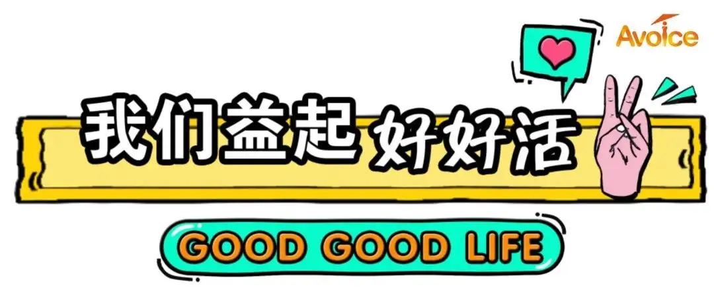
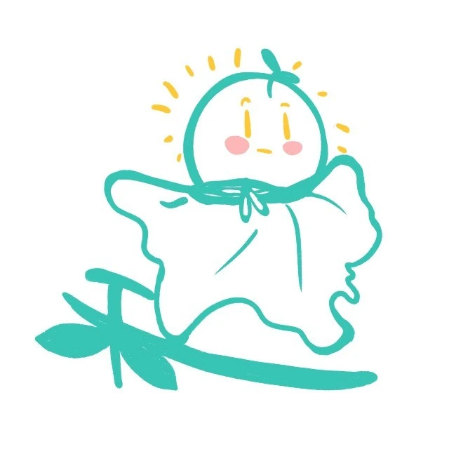
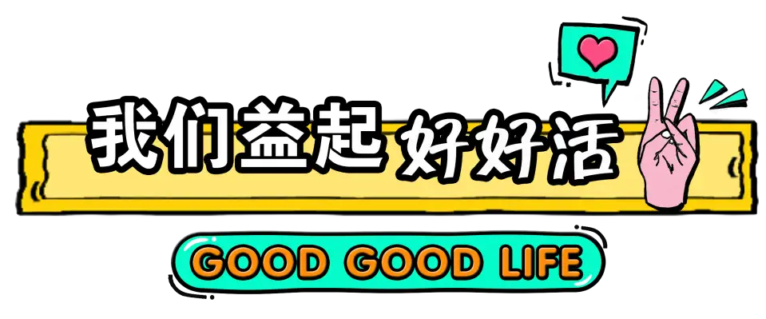
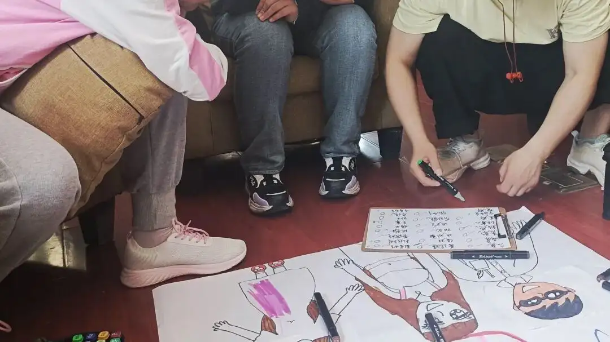
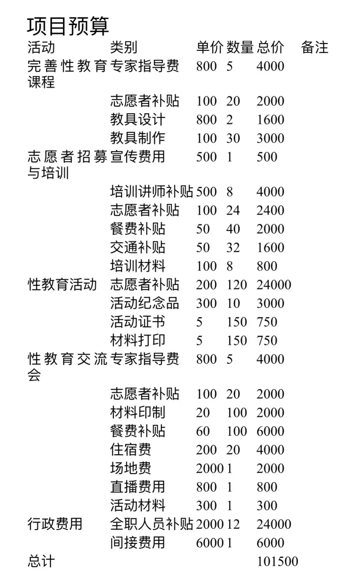
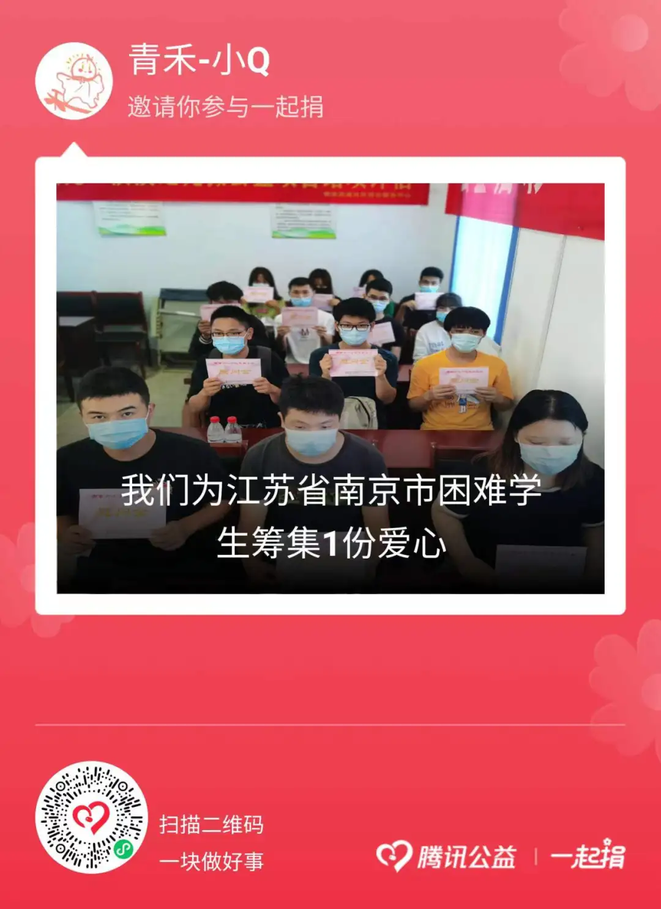
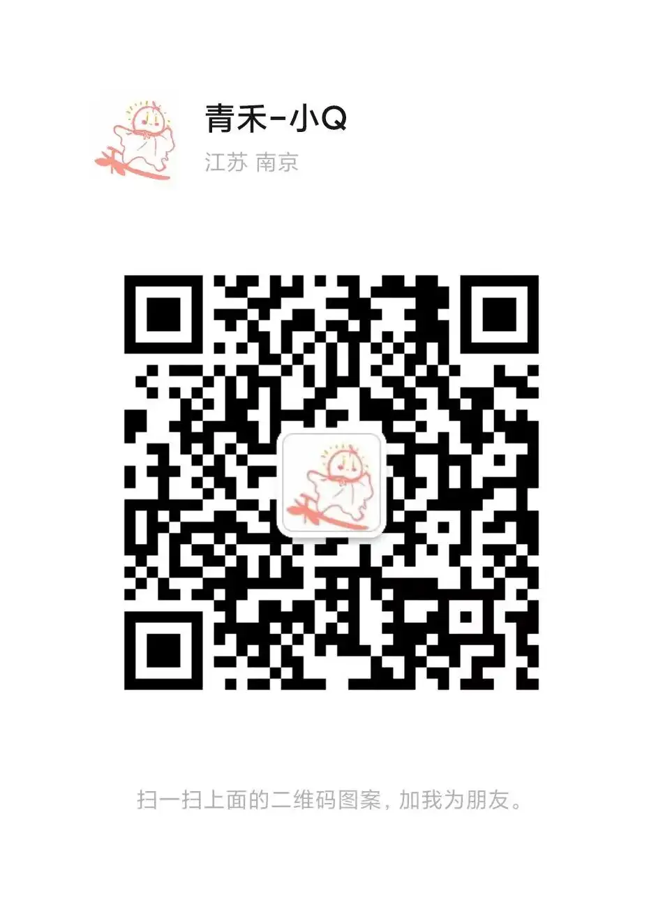
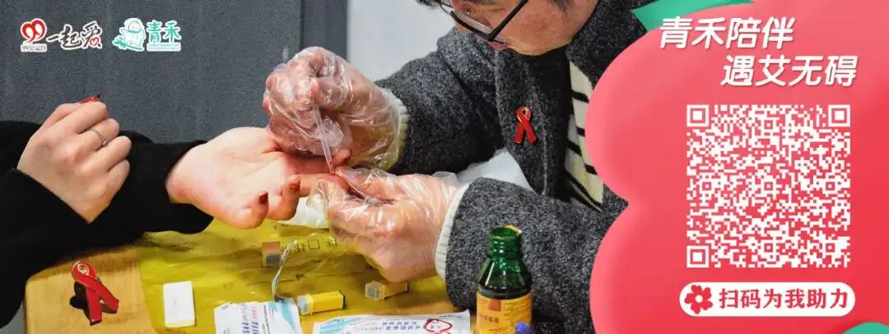
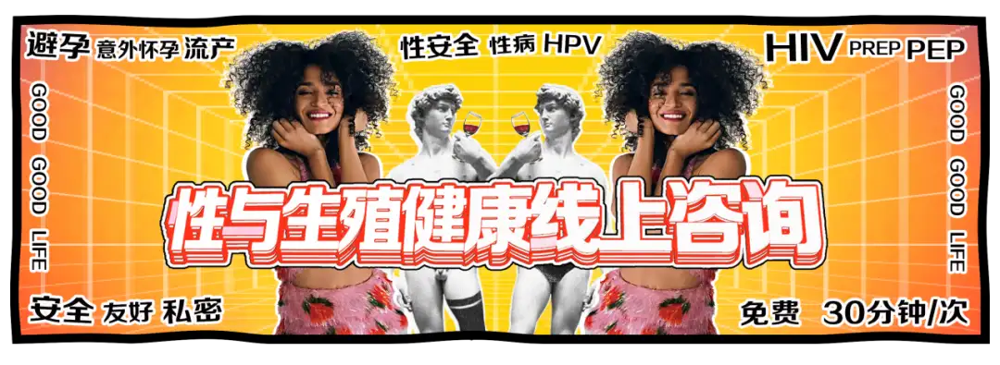

以下文章来源于Good Good Life ，作者青禾社工

南京市江宁区青禾社会工作服务中心，深耕于性健康、性教育领域的公益组织。提供艾滋病等性健康问题的咨询、检测、陪诊、宣教服务。旨在以“生活适应度”定义健康，以多元视角看待性别。倡导性别友善医疗环境，赋能边缘群体争取更均等的生存可能。



全文约 2323字，使用各类读屏软件，听读时间约7分钟。低视力伙伴可点击右上角菜单中的"调整字体"，设置文本大小，方便查看。
如今，许多性教育相关的组织着力推动贫困地区的儿童性教育，但也有不少城市边缘的孩子，在资源的夹缝中被落在了后面。
而性教育的缺失往往让Ta们在成长过程中难以获取科学、全面的性知识，无法习得应对青春期身心发展、性侵害、校园霸凌、性别歧视、意外怀孕和性病传播疾病的技能，更难以在谈性色变的社会文化中形成平等、包容、多元的价值观。在城乡交错的文化冲突中，以上素质的缺失，让这些儿童的生活更易出现许多坎坷。
南京市处于江苏中部、苏皖交接处，文化冲突明显，流动人口较多，许多儿童随父母迁到南京。同时，南京大学资源丰富，青禾社工同许多高校的性健康相关社团有良好的合作联系，了解到许多大学生都有开展儿童性教育的意向，但苦于缺乏合适的课件和开展活动的场地。
由此，青禾社工发起“风中少年”项目，将致力于培养大学生志愿者，开发并完善“青少年性教育课件”，在南京及周边地区为10-15岁儿童（尤其是城市边缘儿童）提供系统、科学的全面性教育课程。

上图为在青禾社工的社区儿童性教育课程中，志愿者和孩子们在一起共创讨论。
项目执行方案
2023.09—2023.12 完善全面性教育课件
完善青禾社工面向10-15岁青少年，制作配套讲义和教学工具，并对课程进行测试，使课件能够满足大部分讲师的使用需求。
2023.10-2023.12 志愿者招募并培训
于南京市江宁区、雨花台区、栖霞区、鼓楼区、江北新区等高校高校较为集中地辖区招募高校性教育相关社团，共10个，每个社团2-3人。招募合格后，共开展8次培训，并经考核合格。
2024.01-02/2024.03-06 推动开展性教育活动
于项目上半年对接社区或高校，为每个社团组织配置一处讲课场地（社区或学校），支持每个社团开展12期活动。每期活动10-15人，并对培训效果进行评估。
2024.08 10-15岁青少年性教育交流会
邀请老师、心理学、社工、儿童家长等性教育相关人士，开展10-15岁青少年性教育交流会，对项目情况效果进行总结汇报。
项目预算

上图为项目预算表。
青禾社工介绍
深耕于性健康、性教育领域的公益组织，志愿者团队从2012年起开展多种性健康活动，并于2021年注册，主要为10-30岁人群提供性健康的咨询、检测、陪诊、全面教育等服务，我们相信沟通、理解、信任、陪伴能够创造更美好的境界。
机构的宗旨是以“生活适应度”定义健康，争取更均等的生存可能。机构使命是使人人不因自身表达而受限，都能获得期望的医疗资源，拥有健康的生活。机构价值观是：平等、包容、自由、自强。
我们推广性健康、减少性危机、呼吁性平等，争取多元主体互动，改善人们对性病、流产等性健康问题和多元性/别的固有认识，倡导性别友善医疗环境，赋能边缘群体争取更均等的生存可能。
曾开展活动链接
报道 | 生长在社区的儿童性教育课程长啥样？青禾社工“风中少年”12期课程完结撒花！
益益青禾，尽随风起 | 青禾社工2022年下半年公益行动报告
在性教育中，我们寄托着未被满足的期望，每一个人的成长中，如何认识自我，如何面对Ta人，都是一场性教育的过程。在这波动变化的世界里，那些仰仗着同伴传播，自我探索所获得的教育，往往充满心酸和波折。
我们希望每一个人都可以化成一阵风，将性教育带去到那些需要的地方，逐渐吹散Ta人成长生命中迷雾；希望你能如一团篝火，将这热气升腾，为Ta们提供勃发的能量，从这东部的南京向西方的群山，向南方的江海，向北方的雪原，向这东部的河川，不停地吹拂下去。
支持我们
九九公益日，由腾讯公益发起的全民公益活动。8月29-31日（周二-周四）是今年九九公益日的江苏专场。这三天早上9点起，腾讯公益将为每笔捐款提供配捐。
如相应时间内项目得到某个人的100元捐款，可能会获得腾讯公益20元配捐。配比不固定，在小红花等的助力下将会有所提升。在当天的配捐结束前，每个人的捐款都有配捐。
扫描下方二维码即可支持青禾社工的儿童性教育项目！也欢迎你分享本篇推文，为我们带来更多的曝光。

注：因本项目为南京市慈善总会的助学子项目支持，仅提供一起捐资质，故而无法通过九九公益日筹款项目链接查阅本项目信息，但后续本项目会通过青禾社工其Ta项目公布项目进展，对您造成不便，深感抱歉。
更多支持方式
集花志愿者：
小红花是腾讯公益的标志，通过集得小红花，可以在九九配捐的时候，获得更大额度的配捐。现阶段，通过每天捐步、捐一元钱、每日答题等方式，都可获得一朵小红花，各种集花方式不冲突。
联合宣传推广：
如果你有一些资源，例如在运营自己的公众号、电台、短视频账号等等，并且愿意帮助我们宣传，欢迎与我们联系。
如果你所在的组织/机构同样准备参与今年九九公益日，青禾社工也期待能与你互相帮助，擦出别样的火花！
如果你所在的企业愿以各种形式为我们的项目提供支持，也期待并欢迎你和我们联系，除了在宣传物料上的品牌露出外，青禾社工也将在性健康议题上为贵公司提供力所能及的回馈。
如果你愿意通过以上任意一种或多种方式为我们助力，欢迎扫描下方二维码，添加小助手微信，备注“99公益+支持方式（如集花/一起捐/联合宣传等）”联系我们。

99公益日将至，
诚邀您扫描下方二维码，了解我们的项目，
助力每一个“我”的性健康！

文案 | 大帅 药罐儿
排版 校对丨药罐儿
往期文章
（点击下方图片即可查看）

上图为青禾性与生殖健康推文链接，我们可以为你提供30分钟安全、友好、私密的免费咨询服务。
南京市江宁区青禾社会工作服务中心，深耕于性健康、性教育领域的公益组织。提供艾滋病等性健康问题的咨询、检测、陪诊、宣教服务。旨在以“生活适应度”定义健康，以多元视角看待性别。倡导性别友善医疗环境，赋能边缘群体争取更均等的生存可能。欢迎关注微信公众平台：Good Good Life